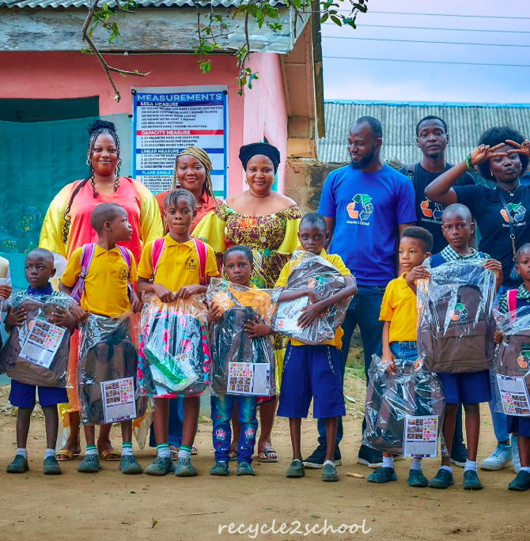

TAPE (The Advance Pathway Educational Foundation) is a Nigerian non-profit built around a simple idea: no child should miss school because their family can't pay the fees. We started in 2020 as Recycle2School, turning community waste into tuition money, and have since grown into mentorship and outreach work too.
We pay school fees and cover books and supplies for children who'd otherwise be sent home.
We pair young people with mentors and run career-readiness sessions alongside their schooling.
Recycle2School collects recyclable waste from communities and uses the proceeds to fund school fees.
TAPE raises school fees through community recycling, then uses Back2School and mentorship to keep children in school and moving forward.
Running since 2020, this is how TAPE pays for it: we collect and recycle waste materials from communities, then use the proceeds to fund underprivileged children's school fees and supplies.
Our outreach project for children and teenagers who aren't in school. We find them, then work with families to get them enrolled.
Pairing young people with mentors and running career-readiness sessions, so school leads somewhere.